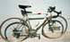
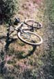

My Bikes
Many people seem to think that 7 bikes is a bit much. I disagree.
Update: now at 8 bikes, after the recent purchase of a folder!
Newer update: now at 9 bikes, after the purchase of a $20 bike I
leave in Vermont, so it doesn't really count. Furthermore, the dinosaur
bike frame is definitely beyond repair, and I have cannibalized it,
so I'm really back at 8 bikes again.
(For larger versions of each picture, click on the small image.)
The commuter
 This is the first new bicycle I ever bought, a 1982 Raleigh lower-end
Olympian "touring" bike. Now it's my beloved commuter. Fenders, folding baskets,
a sturdy rack and a powerful light system make it excellent for basic
transportation. There at least 32,000 miles on this bike, mostly before
I got the other bikes. Lots of stuff has changed, but a few things though
hurting are still original: bars, brake levers, front wheel, crankset and front rings.
Bar-end shifters were a nice addition to this bike.
Update: left crank pedal eye has stripped threads, so I had to replace it.
I used a 172.5mm crank instead of a 170mm as the right hand side does,
and no ill effects so far.
This is the first new bicycle I ever bought, a 1982 Raleigh lower-end
Olympian "touring" bike. Now it's my beloved commuter. Fenders, folding baskets,
a sturdy rack and a powerful light system make it excellent for basic
transportation. There at least 32,000 miles on this bike, mostly before
I got the other bikes. Lots of stuff has changed, but a few things though
hurting are still original: bars, brake levers, front wheel, crankset and front rings.
Bar-end shifters were a nice addition to this bike.
Update: left crank pedal eye has stripped threads, so I had to replace it.
I used a 172.5mm crank instead of a 170mm as the right hand side does,
and no ill effects so far.
The old mountain bike

 This is the only other new bicycle I've bought. It's a 1989 Univega
Alpina Sport mid-range mountain bike. It's dependable and has been
lots of places and is my preferred mountain bike for long rides or
likely mud and such. Not super-nimble or light, but with the rear
rack, great for longer trips carrying stuff. The rear rack has
held everything from snowshoes to climbing ropes and gear.
I've changed the gearing and the rear wheel (it went somewhat out
of true after
I rolled my truck while it was in the back) but still have the
original shifters (push-push below the bar, not a very good idea, but
the beginning of Shimano's marketing success) out of inertia more
than anything else. I have some nice thumbshifters in a box that I'll
put on the next time I've got the grips off for something.
Update: I now have an old Softride stem suspension on the front.
After getting used to it, I think it's great.
This is the only other new bicycle I've bought. It's a 1989 Univega
Alpina Sport mid-range mountain bike. It's dependable and has been
lots of places and is my preferred mountain bike for long rides or
likely mud and such. Not super-nimble or light, but with the rear
rack, great for longer trips carrying stuff. The rear rack has
held everything from snowshoes to climbing ropes and gear.
I've changed the gearing and the rear wheel (it went somewhat out
of true after
I rolled my truck while it was in the back) but still have the
original shifters (push-push below the bar, not a very good idea, but
the beginning of Shimano's marketing success) out of inertia more
than anything else. I have some nice thumbshifters in a box that I'll
put on the next time I've got the grips off for something.
Update: I now have an old Softride stem suspension on the front.
After getting used to it, I think it's great.
The tandem
 This is a wonderfully charming old bike, an old Schwinn 5 speed
Twinn tandem. I'm not sure about the year but after a little
research I suspect that it is about 1968-1972 era. Its frame is a
step-through for both the captain and the stoker. The reach
forward for the stoker is pretty short, so tall people aren't
usually too happy back there (not much knee room.) But I've got
quick release seat post binders front and back and long posts
since you never know who will end up riding. It weighs quite a
lot, something like 75 pounds, and lots of things have needed to
be replaced. When I got it, it still had the original
26-inch-ish funny Schwinn size wheels with the hub brake in the
rear. Tandem wheels take plenty of abuse so those both gave up
the ghost and now it is much happier with modern 26" mountain
bike sized rims and a caliper brake in the rear. With a nice
detachable basket and fenders it is great for poking around
town. Its best role, though, is as a tour vehicle. Being on
the back of a tandem is the best way to get a tour of campus.
The tourist don't have to steer or look forwards or worry
about directions or traffic and it is very easy to chat.
This is a wonderfully charming old bike, an old Schwinn 5 speed
Twinn tandem. I'm not sure about the year but after a little
research I suspect that it is about 1968-1972 era. Its frame is a
step-through for both the captain and the stoker. The reach
forward for the stoker is pretty short, so tall people aren't
usually too happy back there (not much knee room.) But I've got
quick release seat post binders front and back and long posts
since you never know who will end up riding. It weighs quite a
lot, something like 75 pounds, and lots of things have needed to
be replaced. When I got it, it still had the original
26-inch-ish funny Schwinn size wheels with the hub brake in the
rear. Tandem wheels take plenty of abuse so those both gave up
the ghost and now it is much happier with modern 26" mountain
bike sized rims and a caliper brake in the rear. With a nice
detachable basket and fenders it is great for poking around
town. Its best role, though, is as a tour vehicle. Being on
the back of a tandem is the best way to get a tour of campus.
The tourist don't have to steer or look forwards or worry
about directions or traffic and it is very easy to chat.
The fancy road bike

This is 1989-ish Bridgestone Radac that sat in a warehouse until 1992
when it was built up into a nice lightweight road bike. This bike
has the normal-diameter aluminum tubes. It is very light and
feels great; when I pick it up or roll it around it says "Ride Me!"
But I haven't been riding it much since I got the XO-2 so in principle
I'm trying to sell it. Ultegra drivetrain, old Shimano "walk like
a penguin" clipless pedals, downtube shifters...
The dinosaur mountain bike

This is an 1989-ish nice Nishiki mountain bike. It was their nicest
steel frame at the time and had a career as a race bike for a
gung-ho mountain biker type. He had repainted it green with bright
dinosaur stickers which is great since I'm a sucker for dinosaur
stuff. The front fork is an old Rock Shock fork, their first one,
but it works pretty well. I used this bike for rides on technical
trails and it is a great climber as well as a good roller. Update:
on a ride along the Rubicon River, the seat tube broke. That tube
was quite thin and unfortunately rusted noticably.
The break probably happened on a stream crossing since I'd carried the
bike across a bunch of swollen streams and knocked it around a bit.
Anyway, evidently repairing the frame makes no sense so I'm not
sure what I'll do about this one. It was a great looking bike
(the fork had the same paint job as the frame, which is a nice
effect) and a great riding bike. After mourning it for a while,
I've started to move over some of the nice bits to the Univega.
My Bridgestone XO-2
 It's really too bad that Bridgestone no longer sells bikes here
in the States. They had a full selection of very sensible,
well- thought out bikes, of which the 1993 XO-2 is one of the
best examples. It is exactly what a "hybrid" should be. It
takes the riding position from a road bike and the wheels from a
mountain bike, instead of the other way around. With light,
strong, 26" wheels, there is a great tire selection. With the
wider, flared Dirt Drop bars, there are plenty of positions and
the extra width is nice on bumpy stuff. This bike goes
anywhere. Even with the 1.4" slicks I usually ride, it does
amazingly well on everything from pavement to technical trails.
Mountain bikers are often surprised to see me with slicks on
rougher stuff, but the only real advantage of a big knobby 2.1
seems to be on very sandy stuff (for flotation) and on fast,
bumpy descents that I prefer to slow down for anyway. There is
enough room for me to run 1.95" knobbies if I want, but it's
rarely worth the trouble. And if I know I'll be sticking to
pavement, I'll put the 1.25" skinny tires on and enjoy zinging
along. Supposedly there are now some nice Ritchey 26x1" tires
available; those should be great but I haven't seen those yet.
I've got front and rear racks and it is a wonderful bike
to tour on. Its triple crank now has a 24t granny gear, good
for spinning/grinding up those passes with tons of stuff. And it is a
beautiful shade of purple. If I could have only one bike, this
is no question the bike I'd want.
Update: the original Dirt Drop bars were bent in after years
of great service. They got bent after a very gentle crash
in 10cm of snow, so I guess they had already been weakened.
I've got moustache bars on there now. I have not been able
to find DirtDrops similar to the original ones.
Rivendell
sells newer Nitto Dirt Drops but those are wider and curved
differently than the ones I liked so much. I'll probably
switch to those but I am trying to give the moustache bars
a proper chance.
It's really too bad that Bridgestone no longer sells bikes here
in the States. They had a full selection of very sensible,
well- thought out bikes, of which the 1993 XO-2 is one of the
best examples. It is exactly what a "hybrid" should be. It
takes the riding position from a road bike and the wheels from a
mountain bike, instead of the other way around. With light,
strong, 26" wheels, there is a great tire selection. With the
wider, flared Dirt Drop bars, there are plenty of positions and
the extra width is nice on bumpy stuff. This bike goes
anywhere. Even with the 1.4" slicks I usually ride, it does
amazingly well on everything from pavement to technical trails.
Mountain bikers are often surprised to see me with slicks on
rougher stuff, but the only real advantage of a big knobby 2.1
seems to be on very sandy stuff (for flotation) and on fast,
bumpy descents that I prefer to slow down for anyway. There is
enough room for me to run 1.95" knobbies if I want, but it's
rarely worth the trouble. And if I know I'll be sticking to
pavement, I'll put the 1.25" skinny tires on and enjoy zinging
along. Supposedly there are now some nice Ritchey 26x1" tires
available; those should be great but I haven't seen those yet.
I've got front and rear racks and it is a wonderful bike
to tour on. Its triple crank now has a 24t granny gear, good
for spinning/grinding up those passes with tons of stuff. And it is a
beautiful shade of purple. If I could have only one bike, this
is no question the bike I'd want.
Update: the original Dirt Drop bars were bent in after years
of great service. They got bent after a very gentle crash
in 10cm of snow, so I guess they had already been weakened.
I've got moustache bars on there now. I have not been able
to find DirtDrops similar to the original ones.
Rivendell
sells newer Nitto Dirt Drops but those are wider and curved
differently than the ones I liked so much. I'll probably
switch to those but I am trying to give the moustache bars
a proper chance.
A unicycle
 I'm still learning how to ride this one. It a basic unicycle,
20" wheel, which is a little on the small side. I can't get
too far before stopping yet, but already I know that it has
helped my balance and bike handling on technical stuff.
If you read the California Vehicle Code carefully, it appears
that unicycles fall into a void, not being vehicles since they do not
meet the following:
I'm still learning how to ride this one. It a basic unicycle,
20" wheel, which is a little on the small side. I can't get
too far before stopping yet, but already I know that it has
helped my balance and bike handling on technical stuff.
If you read the California Vehicle Code carefully, it appears
that unicycles fall into a void, not being vehicles since they do not
meet the following:
231. A bicycle is a device upon which any person may ride, propelled
exclusively by human power through a belt, chain, or gears, and having one or
more wheels. Persons riding bicycles are subject to the provisions of this
code specified in Sections 21200 and 21200.5.
Though a unicycle has one or more wheels, it is not propelled through
a belt, chain or gears since there is a direct connection. By similar
reasoning, a penny-farthing bicycle would also not be a bicycle.
I have yet to take advantage of this legal loophole.
The Bickerton

 This is a 3 speed small-wheel British folder. In fact, this
is the bike that inspired much of the modern small wheel folders,
which now include the Brompton and the Bike Friday. I just got
this off the net and it looks great. It is an aluminum
(or perhaps aluminium since it is British) and has no welds-
the main "tube" is a rectangular beam that is hinged to fold
halfway. The handlebars are remarkably tall and adjust via
quick releases. The bike folds easily to something that
is quite compact. The front wheel is a 14" and the rear
is 16" and both wheels have fenders, which is great.
The chain is nicely protected by a guard. The ride is
good for a folder, and of course very flexy but it is
great fun to ride and compactifies nicely for train
and BART usage.
This is a 3 speed small-wheel British folder. In fact, this
is the bike that inspired much of the modern small wheel folders,
which now include the Brompton and the Bike Friday. I just got
this off the net and it looks great. It is an aluminum
(or perhaps aluminium since it is British) and has no welds-
the main "tube" is a rectangular beam that is hinged to fold
halfway. The handlebars are remarkably tall and adjust via
quick releases. The bike folds easily to something that
is quite compact. The front wheel is a 14" and the rear
is 16" and both wheels have fenders, which is great.
The chain is nicely protected by a guard. The ride is
good for a folder, and of course very flexy but it is
great fun to ride and compactifies nicely for train
and BART usage.
Vermont Bike
This is a Columbia 5speed, step-through frame, that I bought up in Vermont to
leave there. I got it at a garge sale for $20 and it's proven to be great fun.
The roads near camp are all dirt, but the bike rides fine on inch
and quarter tires there. I use it to bike over to the spring to refill our
5 gallon drinking water jug. People seem surprised I can ride with a heavy awkward
load, but
it really isn't bad and it is nice when we are up there for a while and want to
remain as internal-combistion free as possible. We can canoe over to the spring, but
biking is definitely faster. Maybe it would be good to get a nice sturdy front
basket for it. The bike rides pretty nicely in the snow and is a good way to
get around on the road after it has been dirtied up by stones and such and doesn't
make skiing that nice.
If the conditions are reasonable, it is a blast to ride on the frozen lake. Riding on slick
ice is fun and something of a study in momentum and very gentle changes in direction.
Other remaining possibilities
There are a few other bikes I'd like to have. A simple 3 speed would be
nice to have to leave at school for quick trips to the library and
to teach and such. And
I would like to replace the dinosaur bike with a nice mountain bike. I'm
not in a hurry though and I'm looking forward to trying some of the modern
bikes. I'm hopeful about the beam bikes, after riding those it seems
like a very promising idea for a mountain bike. But I'd also like to
give other bikes a go on a proper trail and see what they are like.
The Bike Friday folding bikes are well- thought out and well- made,
as well as being a super clever idea. (Update: I'm happy
with the Bickerton!). I wouldn't mind a fixed gear
bike if I ran across one, either...
 This is the first new bicycle I ever bought, a 1982 Raleigh lower-end
Olympian "touring" bike. Now it's my beloved commuter. Fenders, folding baskets,
a sturdy rack and a powerful light system make it excellent for basic
transportation. There at least 32,000 miles on this bike, mostly before
I got the other bikes. Lots of stuff has changed, but a few things though
hurting are still original: bars, brake levers, front wheel, crankset and front rings.
Bar-end shifters were a nice addition to this bike.
Update: left crank pedal eye has stripped threads, so I had to replace it.
I used a 172.5mm crank instead of a 170mm as the right hand side does,
and no ill effects so far.
This is the first new bicycle I ever bought, a 1982 Raleigh lower-end
Olympian "touring" bike. Now it's my beloved commuter. Fenders, folding baskets,
a sturdy rack and a powerful light system make it excellent for basic
transportation. There at least 32,000 miles on this bike, mostly before
I got the other bikes. Lots of stuff has changed, but a few things though
hurting are still original: bars, brake levers, front wheel, crankset and front rings.
Bar-end shifters were a nice addition to this bike.
Update: left crank pedal eye has stripped threads, so I had to replace it.
I used a 172.5mm crank instead of a 170mm as the right hand side does,
and no ill effects so far.